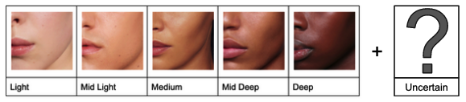
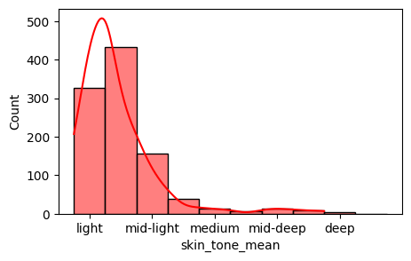
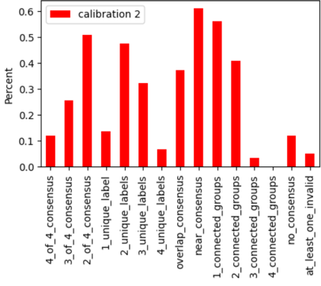
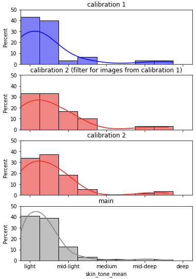

Skin Tones Data Documentation¶
Data documentation contributions and feedback are welcome!
Overview¶
Primary Data Modality¶
- Image Data
- Tabular Data
Dataset Description¶
Post hoc skin tone labels of the faces of customers in the Zalando Voice of Customer (VOC) dataset curated as part of the “Skin Tone Labeling Initiative.” The primary purpose of this data is for fairness evaluation purposes:
- to help ensure data used to train ML/AI systems for Size and Fit is representative of Zalando’s customers
- to ensure ML/AI systems do not systematically underperform for customers with certain skin tones
(see Known Dataset Usage - Known Dataset Usage for more information about known fairness evaluations implemented using this dataset).
This data was collected by a team of four Zalando labelers from a mix of teams including Beauty, Size and Fit, and Algorithmic Privacy and Fairness. Labelers followed specific Skin Tone Labeling Instructions, and labeled each image for skin tone based on the 2022 Zalando Beauty skin tone scale (shown below).

Further technical details can be found in the Skin Tone Labeling GitHub Repository.
Special thanks to the labelers:
- Alex Loosley, Algorithmic Privacy and Fairness
- Gunay Kazimzade, Algorithmic Privacy and Fairness
- Amrollah Seifoddini, Size and Fit
- Andra Magerusan, Beauty
Beyond fairness evaluations, this dataset along with the entire initiative has inpired the creation of a Zalando Skin Tone Labeling Playbook.
Status¶
Status Date: 27/04/2023
Under Preparation - The dataset is still under active curation and is not yet ready for use due to active “dev” updates. The dataset should be ready for wider usage in June 2023.
Relevant Links¶
- Zalando VOC Skin Tones Dataset (S3 Bucket requiring access permissions)
- Zalando VOC Images Data Documentation (Base dataset used for labeling)
- Skin Tone Labeling Initiative
- Instructions for Labelers
- Dataset processing and analysis (GitHub Repository)
Developers¶
- Alex Loosley, Algorithmic Privacy and Fairness: (Principle Developer)
- Amrollah Seifoddini, Size and Fit: (Dataset Owner)
Owner¶
- Main point of contact: Amrollah Seifoddini
- Team: Size and Fit (Zurich)
- Affiliation: Zalando SE
- Team Website: N/A
Data Subject(s)¶
- Images of consenting customers
- Sensitive Data about people
- Skin tones labels
Data Point Description¶
A data point is made up of an image of a person, and one or more skin tone labels as defined in this Instructions for Labelers document.
See the Examples of Data Points section for examples.
Dataset Statistics¶
| Category | Data |
|---|---|
| Size of Dataset | 1009 MB |
| Number of Data Points | 59 calibration + 999 main |
| Label Classes | 6 (5 skin tones, 1 for uncertainty) |
| Type of labels | Multiple labels per data point |
| Algorithmic Labels | 0 |
| Human Labels | All |
Additional Notes: The definitions of main and calibration splits and information on labels can be found in the Human Annotation - Annotation Tasks section.
Tables and Fields¶
TABLE: labels_per_image¶
- Primary Key:
annotation_image_id - Description: Skin tone label data for each image.
| Field Name | Type | Description |
|---|---|---|
| annotation_image_id | str | Primary key identifying image with respect to annotation job |
| labels | list[list[str]] | List of multiple labels (inner lists) given by each labeler (outer list) |
| skin_tone_values | list[float] | Skin tone values for each labeler (based on ZBeautySkinToneLabelEncoder) |
| valid_skin_tone_values | list[float] | Same as skin tone values with invalid value floats removed |
| skin_tone_mean | float | Mean valid skin tone value |
| skin_tone_std | float | Standard deviation of valid skin tone values |
| Statistic | skin_tone_mean |
|---|---|
| count | 999 |
| mean | 0.670921 |
| std | 0.629619 |
| min | 0. |
| 25% | 0.25 |
| 50% | 0.5 |
| 75% | 0.75 |
| max | 4. |
| mode | 0.5 |
Histogram of skin_tone_mean values:

Additional Notes: Skin tone related labels and values are protected attributes, see the sensitive and protected attributes section for more details.
TABLE: labeling_job_manifest¶
- Primary Key:
image_id - Description: Annotation job manifest, containing information about what was annotated.
| Field Name | Type | Description |
|---|---|---|
| image_id | str | Unique image id |
| annotation_image_id | str | image id given corresponding annotation job |
| source-ref | str | s3 bucket location |
TABLE: data_per_label¶
- Primary Key: None
- Description: Information about each label, such as a labeler UUID and meta data like how much time was needed to produce the label.
| Field Name | Type | Description |
|---|---|---|
| annotation_image_id | str | links to image_id in labels_per_image table |
| workerId | str | unique id of worker (labeler) who labeled the image |
| timeSpentInSeconds | float | time needed for labeler to label the image |
Dataset Version and Maintenance¶
Version Details¶
Current Data Version: Not currently tracked
Data Version Release Date: 03/03/2023
Data Version for last Data Card Update: N/A
Last Data Card Update: 10/03/2023
Data Change Log¶
TBD
Maintenance Plan¶
This dataset is in development mode and not yet being maintained for usage by others.
Versioning: TBD
Updates: TBD
Errors: TBD
Feedback: TBD
Next Planned Update(s)¶
Version affected: Not currently tracked
Next data update: Ongoing until version 1.0.0
Next version: 1.0.0
Next version update: 04/2023
Expected Change(s)¶
Version 1.0.0 will be released once data curation and preparation is complete.
Example of Data Points¶
Typical Data Point¶
A typical annotation example from the labels_per_image table:
{"annotation_image_id": "10",
"skin_tone_values": [3.5, 3.5, 3.0, 3.0],
"labels": [["mid-deep", "deep"],
["mid-deep", "deep"],
["mid-deep"],
["mid-deep"]],
"uncertain_labels": [false, false, false, false],
"valid_skin_tone_values": [3.5, 3.5, 3.0, 3.0],
"any_uncertainty": false,
"complete_consensus": false,
"overlap_consensus": true,
"near_consensus": true,
"n_skin_tone_values": 4,
"frac_unique_values": 0.5,
"n_unique_skin_tone_values": 2,
"n_connected_skin_tone_groups": 1,
"skin_tone_mean": 3.25,
"skin_tone_std": 0.25,
"has_invalid_annotation": false,
"skin_tone_mode_value": 3.0,
"skin_tone_mode_count": 2,
"n_valid_labels": 4}
Here, annotators were not uncertain in their labels, two believed the skin tone was a combination of
mid-deep and deep, and two thought the skin tone was just deep (note neighbouring skin-tone labels
like mid-deep and deep were allowed, see Annotations and Labling
for more details).
Note, this data corresponds to the main labeling task which only had three labelers. See Annotations and Labeling for more details about labeling tasks.
Atypical Data Point¶
An atypical annotation example from the labels_per_image table where
the first labeler seemed to have made a mistake by labeled a skin tone as both light and deep:
{"annotation_image_id": "24",
"skin_tone_values": [-1.0, 1.5, 0.0],
"labels": [["light", "deep"], ["mid-light", "medium"], ["light"]],
"uncertain_labels": [false, false, false],
"valid_skin_tone_values": [1.5, 0.0],
"any_uncertainty": false,
"complete_consensus": false,
"overlap_consensus": false,
"near_consensus": false,
"n_skin_tone_values": 2,
"frac_unique_values": 1.0,
"n_unique_skin_tone_values": 2,
"n_connected_skin_tone_groups": 2,
"skin_tone_mean": 0.75,
"skin_tone_std": 0.75,
"has_invalid_annotation": true,
"skin_tone_mode_value": 0.0,
"skin_tone_mode_count": 1}
Note, this data corresponds to the calibration 1 labeling task which had more labeling mistakes as labelers got used to the labeling UI. See Annotations and Labeling for more details about labeling tasks.
Sampling of Data Points¶
| Example Type | annotation_image_id | Apparent skin tone |
|---|---|---|
| human labelers agreed on labels | 10 | lighter |
| 15 | deeper | |
| human labelers were uncertain about label | 14 | lighter |
| 255 | deeper |
Additional Note: No actual images can be shown here because they require access approval (see Access section).
Purpose and Motivations¶
Intended Purpose(s)¶
- Fairness Evaluation
Motivating Factor(s)¶
- Assessing and publishing the distribution of skin tones in the Zalando VOC dataset
- Identifying potential sample bias in data that may be used for training computer vision systems at Zalando
- Providing a skin tone dataset for fairness evaluation
- Writing a skin tone labeling playbook for others who want to curate skin tones via post hoc human labeling
See the skin-tone-labeling repository for more details.
Intended Use¶
Dataset Use(s)¶
- Skin tone fairness evalaution for pre-production models
Suitable Use Case(s)¶
Suitable Use Case: Use to evaluate (un)fairness of any model that should perform well for Zalando VOC type images of humans. For example, Zalando’s Body Measurements Pipeline.
Unsuitable Use Case(s)¶
This data is, in its current form, not vetted for training a skin tone classifier that could be used at scale.
Research and Problem Space(s)¶
- Skin tone fairness evaluation
- Analysis of bias in human skin tone annotations
Information for Usage¶
Usage Guideline(s)¶
Usage Guidelines: This dataset is meant for fairness evaluation purposes only to ensure that models trained on the Zalando VOC dataset, or similar, do not systematically underperform for subjects with certain skin tones.
Approval Steps: The reason of using this dataset for a particular use case must be described and approved via a DPR process. New DPRs should refer to this existing DPR, which pertains to the creation of this dataset. See the Accesss Prerequesites section.
Reviewer: Please tag the data owner when creating a DPR.
Use with Other Data¶
Safety Level¶
- Safe to use with other data for fairness evaluation purposes
Best Practices¶
If presenting examples of this data is a must, consider blurring faces and backgrounds.
Additional Notes: Add here
Forking and Sampling¶
Safety Level¶
- Conditionally safe to fork and/or sample
Acceptable Sampling Method(s)¶
- Cluster Sampling
- Multi-stage sampling
- Stratified Sampling
- Unsampled
Best Practice(s)¶
This dataset is meant for fairness assessments against skin tone. Any samples should ensure that all skin tones are represented.
Risk(s) and Mitigation(s)¶
Summarize here. Include links and metrics where applicable.
Unrepresenting skin tone groups: Sampling incorrectly risks certain skin tone groups being underrepresented for skin tone based fairness evaluations. Ensure all skin tones are well represented such as to have enough data points to estimate performance on particular skin tones with a low enough level of uncertainty to be able to draw reliable fairness conclusions.
Notable Feature(s)¶
Exploration Demo: Link
Distribution(s)¶
N/A - The entire main split of the dataset can be used for fairness evaluation. At this time, we do not recommend training models with this data, and therefore, do not have a recommended train-validation-test split.
Known Correlation(s)¶
None known at this time
Split Statistics¶
TBD
Citation Guidelines¶
Guidelines: Refer to this dataset by it’s title and provide a reference link to this data card.
Known Usage¶
Models(s)¶
| Model | Model Task | Purpose of Dataset Usage | AI Act Risk |
|---|---|---|---|
| Size and Fit - On Device Silhouette Extraction | image segmentation | Fairness Evaluation | Limited |
Note, this table may not be exhaustive. Dataset users and documentation consumers at large are highly encouraged to contribute known usages.
Application(s)¶
| Application | Brief Description | Purpose of Dataset Usage | AI Act Risk |
|---|---|---|---|
| Size and Fit - Body Measurements Pipeline | Pipeline from image of customer to body measurements including image segmentation and body reconstruction | Fairnesse Evaluation | Limited |
| Size and Fit - Body Measurements Pipeline - 2022 Proof Of Concept | An initial proof of concept to determine a best approach to doing fairness assessments on Size and Fit’s body measurements pipeline | Fairnesse Evaluation | Limited |
Note, this table may not be exhaustive. Dataset users and documentation consumers at large are highly encouraged to contribute known usages.
Access, Retention, and Deletion¶
Access¶
Relevant Links¶
- Zalando VOC Skin Tones Dataset (S3 Bucket requiring access permissions)
Data Security Classification¶
- Yellow
Prerequisite(s)¶
- Users requiring access must get approval on a DPR (with corresponding use case) either by: - adding their user to the existing DPR - creating a new DPR if the existing DPR does not match your requirements
- For data with images, users must be added to role with S3 access to the Zalando VOC skin tones dataset (first get DPR approval described above, then contact dataset owner)
Retention¶
Duration¶
TBD
Reasons for Duration¶
TBD
Policy Summary¶
TBD
Process Guide¶
TBD
Exception(s) and Exemption(s)¶
TBD
Deletion¶
Deletion Event Summary¶
TBD - One deletion event has occurred during the timespan of curating this dataset (is this documented elsewhere?)
Acceptable Means of Deletion¶
TBD
Post-Deletion Obligations¶
TBD
Operational Requirement(s)¶
TBD
Exceptions and Exemptions¶
TBD
Provenance¶
Collection¶
Method(s) Used¶
- Taken from other existing datasets
- Crowdsourced - Internal Employee (See section on Annotations and Labeling)
Is this source considered sensitive or high-risk? Yes
Dates of Collection: 2022/12/15 - 2023/03/15
Update Frequency for collected data:
- Static
Additional Links for this collection:
See section on Access, Rention, and Deletion
Source Description(s)¶
- Source: Zalando VOC Skin Tones Dataset
Collection Cadence¶
Static: Data was collected once from a single source.
Attribute Collection Criteria and Integration¶
Data Integration¶
Zalando-VOC images were used as input for labeling. These images are not generally included in skin tone dataset, but are identified by image-id to allow for fairness evaluation of systems that use such images.
Data Point Collection Criteria¶
Data Selection¶
- Filter out images with bad lighting and occlusions: done based with previously existing annotations done on Zalando VOC data
- Choose images with >2.5% skin exposure: This threshold gave balance between being able to see skin, and leaving enough images to annotate (~1000) for a fairness evaluation, given the annotation budget
Relationship to Source¶
Use and Utility(ies)¶
- Zalando VOC images: Skin tone labels data are intended to be used for to evaluate the fairness ML/AI systems that take Zalando VOC images as an input.
Benefit and Value(s)¶
- Zalando VOC images: This data can be used to ensure ML/AI systems that consume Zalando VOC like images do not underperform for certain skin types. These skin tone data also inform others of existing skin tone biases in the Zalando VOC dataset.
Limitation(s) and Trade-Off(s)¶
- Zalando VOC images: The skin tones in this dataset are annotations, not customer self-identifications. Skin tone annotation is subjective and the data here represent the best guesses from annotators that is affected a range of factors (see Annotations and Labeling). Mistakes from labelers may have also occurred.
Sensitive and Protected Attributes¶
Sensitivity of Data¶
Sensitivity Type(s)¶
- User Metadata (skin tones)
- Identifiable Data (unblurred images)
- S/PII
Field(s) with Sensitive Data¶
Intentional Collected Sensitive Data
- Images used in labeling contain pictures of customers (without blurred faces)
Unintentionally Collected Sensitive Data
- Can see the setting in which customers take pictures of themselves
Security and Privacy Handling¶
Access to this data is restricted to a small select group of people as governed by the following Data Processing Requests (DPRs):
DPR - Unblurred Zalando VOC Image access for Skin Tone Labeling: This DPR is associated with labeling jobs used to curate this dataset.
Risk Type(s)¶
See relevant DPRs
Protected Attributes¶
Protected Attribute Type(s)¶
- Skin Tone
Field(s) with Protected Attributes¶
Intentionally Collected Attributes
Protected attributes were labeled or collected as a part of the dataset creation process.
| Field Name | Description |
|---|---|
| skin_tone_labels | list of skin tone labels (one or more from each labeler) |
Unintentionally Collected Attributes
Rationale¶
To be used for fairness evaluation.
Source(s)¶
Methodology Detail(s)¶
All protected attributes were collected via human annotation. See the Annotations and Labeling section for more details.
Protected Attribute Distribution(s)¶
All protected attributes (skin-tone) were collected via human annotation:
See Annotations and Labeling - Distributions for skin-tone distributions.
Known Correlations to Protected Attributes¶
None identified at this time.
Possible Correlations to Protected Attributes¶
Labeler bias may cause correlations between skin tone labels and attributes of the image not related to skin tone, such as:
- judgements based on objects in the field of view (i.e. certain objects associated with certain cultures)
- facial shape and body shape
- repeated customers - some customers appear multiple times in separate images and labelers may have consistently given each the same incorrect skin tone
- labeler recency bias - seeing a lot of a certain skin color in a row can affect the next label made
Risk(s) and Mitigation(s)¶
Some of the possible correlations have been mitigated by:
- having multiple labelers from different backgrounds label each image
- shuffling the data each labeler labels - reducing the labeler recency bias effect
- making two independent labeler calibration round to have the chance to debug the labeling process have discussions about various unconscious labeler biases so each labeler can be mindful and potentially prevent introducing these unwanted correlations
See Annotations and Labeling section for more details.
Transformations¶
Code Base and Existing Documentation¶
See the skin-tone-labeling code base for code and documentation on data preparation, including data transformation.
Synopsis¶
Transformation(s) Applied¶
- Data Enrichment
- Grouping
Library(ies) and Method(s) Used¶
Transformation Type N/A
Method: Skin tone labels have been grouped by image and enriched by calculating other statistics. No loss of raw data has taken place.
Platforms, tools, or libraries: - Python
Additional Notes:
Annotations and Labeling¶
Annotation¶
Task(s)¶
Task description: Skin tone labelers were asked to label the skin tone of the human subject appearing in each image by following a particular set of Instructions for Labelers (more info about who the skin tone labelers where found below).
In short, each labeler labeled each image with one or more skin tone labels from the 2022 Zalando Beauty skin tone scale (shown below).
LabelerAn uncertain label was also used by human-labelers that felt uncertain about the label
they chose (for example, mid-light + uncertain, or just uncertain was allowed).
Labelers were allowed to choose two adjacent labels when unsure (for example, mid-light + medium
was allowed), and labelers had a separate label for indicating they were not sure of the correct label.
The overall labeling work was broken down into four sequential tasks described in the following timeline figure:
 Figure: Labeling tasks.
Figure: Labeling tasks.
Labelers were given a two small calibration tasks and after each calibration task, a discussed took place about:
- How long did the task take?
- Were any instructions unclear?
- What, if any, potential biasing factors did you notice, and how might one be mindful about these to mitigate such biasing factors?
Methods used: Four human labelers with varying backgrounds labeled each image (see section below on Human Annotators).
Inter-rater adjudication policy: Budget permitting, the next version of the dataset will include results from a labeler review of images where more than two labelers disagreed.
Golden questions: No golden questions.
Characteristic(s)¶
| Skin tone label | Number |
|---|---|
| Number of annotated examples | 1058 |
| Total number of annotations | 4322 |
| Average annotations per example | 4.1 |
| Number of annotators per example | 4 |
| 4 of 4 agreement | 12% |
| 3 of 4 agreement | 25% |
| 2 of 4 agreement | 51% |
| 1 unique label | 14% |
| 2 unique labels | 47% |
| 3 unique labels | 32% |
| 4 unique labels | 7% |
Above: Based on calibration #2 split (4 labelers labeling 59 examples).
Label Consensus Statistics: 
Above: Based on calibration #2 split (4 labelers labeling 59 examples). See the Zalando-VOC Skin Tone dataset breakdown for more details.
All statistics were calculated using this jupyter notebook.
Description(s)¶
Skin Tone Label
Description: Skin tone annotations are subjective. Thus we worked with four labelers from different backgrounds who annotated for skin tone using the following Instructions for Labelers.
Platforms, tools, or libraries:
- AWS SageMaker
Distribution(s)¶

Figure: Skin-tone label distributions (ignoring uncertain) for all task splits. Note,
choice of neighbouring labels (i.e. mid-light+medium) was allowed and such combinations
are counted as distinct.
All statistics were calculated using this jupyter notebook.
Human Annotators¶
Annotation Workforce Type¶
- Human Annotations (Expert)
- Human Annotations (Non-Expert)
- Human Annotations (Employees)
Annotator Pool(s)¶
Skin tone labelers (the only pool)
Number of unique annotators: 4
Task(s) completed: This pool completed all tasks described above
Expertise of annotators:
- Beauty
- Ethical data labeling
- Responsible AI
- Size and fit applications
Summary of general (non task specific) annotation instructions: N/A
Summary of annotator’s responses to gold questions: N/A
Annotation platforms: AWS SageMaker GroundTruth
Language(s)¶
(Annotator Languages Spoken)
- English [100 %]
- German [50 %]
- More TBD
Location(s)¶
(Annotator Locations of Upbringing)
- Canada [25 %]
- Azerbaijan [25 %]
- Germany [25 %]
- Iran [25 %]
(Annotator Current Locations of Residence)
- Germany [75 %]
- Switzerland [25 %]
Gender(s)¶
(Annotator Genders)
- Male [50 %]
- Female [50 %]
Validation Types¶
Method(s)¶
- Range and Constraint Validation
- Structured Validation
- Consistency Validation
Breakdown(s)¶
(Validation Type)
Number of Data Points Validated: all
Description(s)¶
All skin tone labels are checked for validity.
Sampling Methods¶
Method(s) Used¶
- Unsampled
Characteristic(s)¶
Sampling Criteria¶
See Data Point Collection Criteria for information on how images were selected for labeling from the Zalando VOC Images Dataset.
Model Documentation Metadata¶
Documentation Template Version¶
Documentation Authors¶
- Alex Loosley, Algorithmic Privacy and Fairness: (Principle Developer)
- Pak-Hang Wong, Algorithmic Privacy and Fairness: (Contributor)